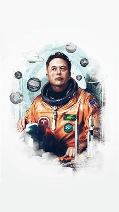

About Elon Musk
- ∾Musk was born on June 28, 1971, in Pretoria, Transvaal, South Africa.
- ∾At age 10, he developed an interest in computing with the Commodore VIC-20. He taught himself computer programming and at age 12, sold the code for a BASIC-based video game he created called Blastar.
- ∾Musk was initially educated at private schools, attending the English-speaking Waterkloof House Preparatory School. Musk later graduated from Pretoria Boys High School and moved to Canada in June 1989.
- ∾At the age of 19, Musk was accepted into Queen's University in Kingston, Ontario, for undergraduate study. In 1992, after spending two years at Queen's University, Musk transferred to the University of Pennsylvania, where, at the age of 24, he received a Bachelor of Science degree in physics from its College of Arts and Sciences, and a Bachelor of Science degree in economics from its Wharton School of Business. Musk extended his studies for one year to finish the second bachelor's degree.
- ∾In 1995, at age 24, Musk moved to California to begin a PhD in applied physics and materials science at Stanford University, but left the program after two days to pursue his entrepreneurial aspirations in the areas of the Internet, renewable energy and outer space. In 2002, he became a U.S. citizen.
"The path to the CEO's office should not be through the CFO's office, and it should not be through the marketing department. It needs to be through engineering and design."
Admirable Videos On Elon Musk
Achievements

- ∾Zip2
- In 1995, Musk and his brother, Kimbal, started Zip2, a web software company, with US$28,000 of their father's money.
- ∾X.com and PayPal
- In March 1999, Musk co-founded X.com, an online financial services and e-mail payment company, with US$10 million from the sale of Zip2. One year later, the company merged with Confinity, which had a money transfer service called PayPal. The merged company focused on the PayPal service and was renamed PayPal in 2001.
- ∾SpaceX
- With US$100 million of his early fortune, Musk founded Space Exploration Technologies, or SpaceX, in June 2002. SpaceX develops and manufactures space launch vehicles with a focus on advancing the state of rocket technology.
- ∾Tesla Motors
- Is an American automaker and energy storage company co-founded by Elon Musk, Martin Eberhard, Marc Tarpenning, JB Straubel and Ian Wright, and is based in Palo Alto, California. The company specializes in electric cars, their powertrain components, and also produces battery charging equipment.
- ∾SolarCity
- Musk provided the initial concept and financial capital for SolarCity, which was then co-founded in 2006 by his cousins Lyndon and Peter Rive. Musk remains the largest shareholder. SolarCity is now the second largest provider of solar power systems in the United States.
- ∾Hyperloop
- On August 12, 2013, Musk unveiled a concept for a high-speed transportation system incorporating reduced-pressure tubes in which pressurized capsules ride on an air cushion driven by linear induction motors and air compressors. The mechanism for releasing the concept was an alpha-design document that, in addition to scoping out the technology, outlined a notional route where such a transport system might be built: between the Greater Los Angeles Area and the San Francisco Bay Area.
- ∾OpenAI
- In December 2015, Elon Musk announced the creation of OpenAI, a not-for-profit artificial intelligence (AI) research company. OpenAI aims to develop artificial general intelligence in a way that is safe and beneficial to humanity.